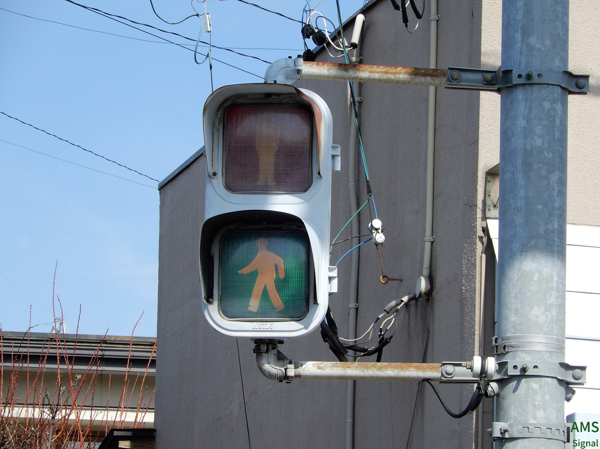
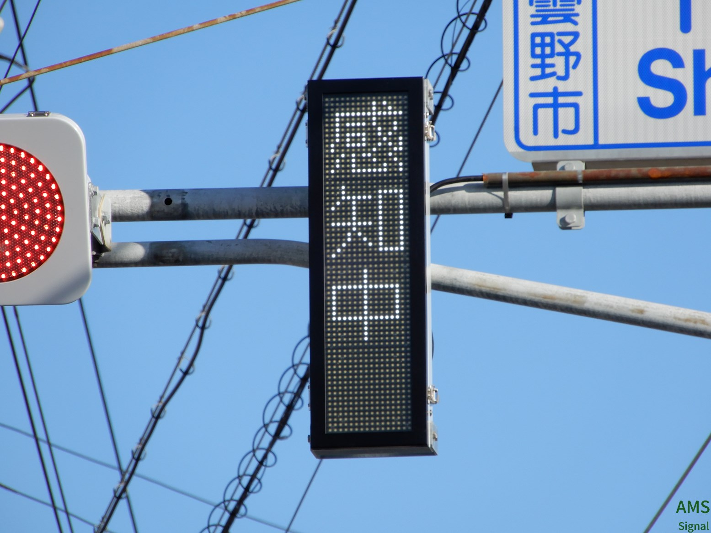
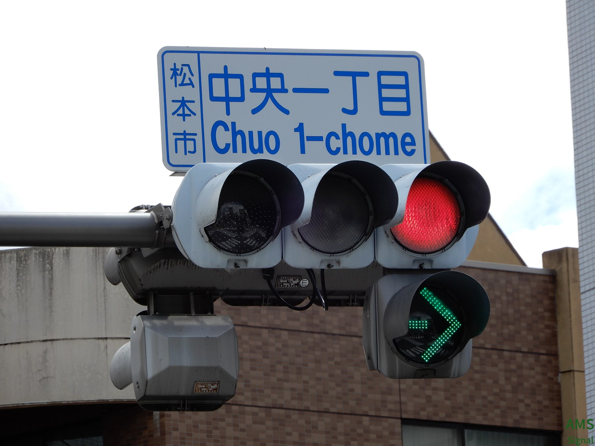
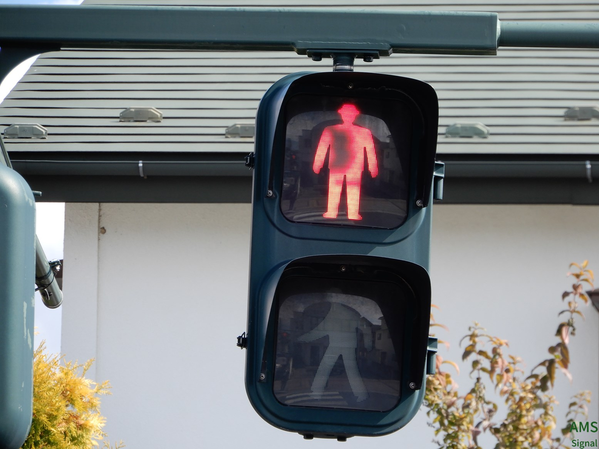

ようこそ、AMS Signalへ！
少しおかしいのは気にしないでください
◇リンク集はこちら◇
2023.1版信号交差点リスト(安曇野市)
⚠当サイトの画像等の無断転載はおやめください。▼
23/03/07 無断転載防止の強化と転送容量削減のために画像のロゴ入れと同時に圧縮を行うように変更しました。ご了承ください。
1.長野県
二子（松本市）


また、同交差点内には長野県最古の歩灯があります。



撮影 2023/03/05
掲載 2023/03/07
独自管理番号β(安曇野市のみ対応)：非対応
北海渡（安曇野市）


撮影 2022/12/03
掲載 2023/01/10
独自管理番号β(安曇野市のみ対応)：220-004
下鳥羽（安曇野市）



撮影 2023/01/08
掲載 2023/01/10
独自管理番号β(安曇野市のみ対応)：220-057
二の丸（松本市）信号機廃止済み


撮影 2022/08/09
掲載 2022/12/14
独自管理番号β(安曇野市のみ対応)：非対応
中央一丁目（松本市）更新済み

青だけ素子LEDのDK2があります。矢印も3列とかなりレアな組み合わせです。撮影 2022/09/03
掲載 2022/11/27
独自管理番号β(安曇野市のみ対応)：非対応
堀金（安曇野市）

撮影 2022/09/21
掲載 2022/11/27
独自管理番号β(安曇野市のみ対応)：220-026
巾上（松本市）新ネタ！

撮影 2022/10/30
掲載 2022/11/27
独自管理番号β(安曇野市のみ対応)：非対応
アルプス口（松本市）

第4世代おにぎりですが、赤の素子が欠けています。
撮影 2022/10/30
掲載 2022/11/27
独自管理番号β(安曇野市のみ対応)：非対応
小諸駅近く

撮影 2022/11/20
掲載 2022/11/27
独自管理番号β(安曇野市のみ対応)：非対応
豊科駅入口（安曇野市）

撮影 2022/11/27
掲載 2022/11/27
独自管理番号β(安曇野市のみ対応)：220-071

安曇野市信号交差点独自番号表（2023年01月訂正版）＞
©2022-2023 AMS-Signal Project By Gasukaku. All Rights Reserved.
このサイトではアクセス分析を目的としてGoogle社の「Googleアナリティクス」を使用しています。(これは個人を特定できるものではありません。また、Googleアナリティクスオプトアウトアドオンを利用することによりGoogleアナリティクスを無効にすることができます。)トップへ↑